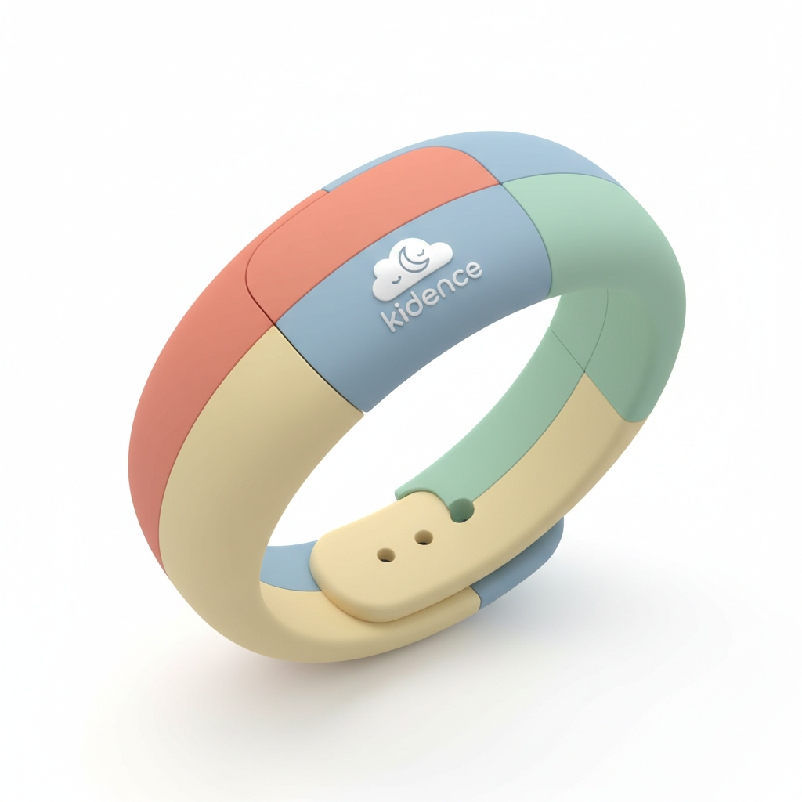
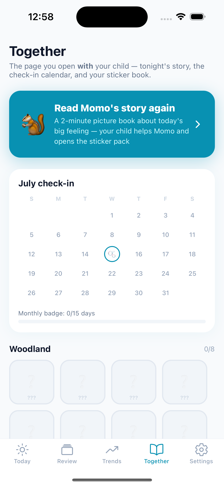
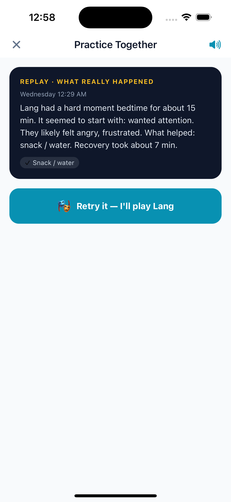
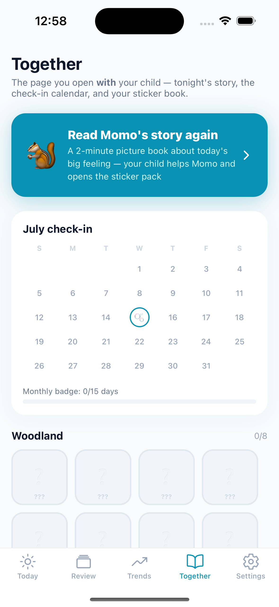
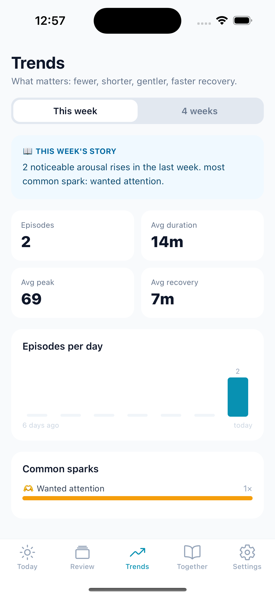

A kid-friendly wristband that sees the storm coming, hands you the right words in the moment — and turns every meltdown into practice, for you and your child.

A gentle heads-up seconds before the boil-over — while the moment is still workable.
One move and one thing to say — chosen from what has actually worked for your kid.
Fewer, shorter, gentler storms — tracked week over week, so you can see the progress.
60 seconds in the evening: the AI plays your child, you rehearse your response out loud.
Today's hard moment becomes tonight's picture book — your child names the feeling through Momo the squirrel, and opens a sticker pack.
3 seconds during · 90 seconds after · 60 seconds in the evening. Everything else is automatic.
Real screens from the beta.

Live calm-to-storm view

Practice — the AI plays your child

Momo's story & the sticker book

Fewer, shorter, gentler — tracked
Two weeks, free early access to the wristband and app, and a real say in what we build. Three minutes to tell us about your family.
Join the beta waitlist